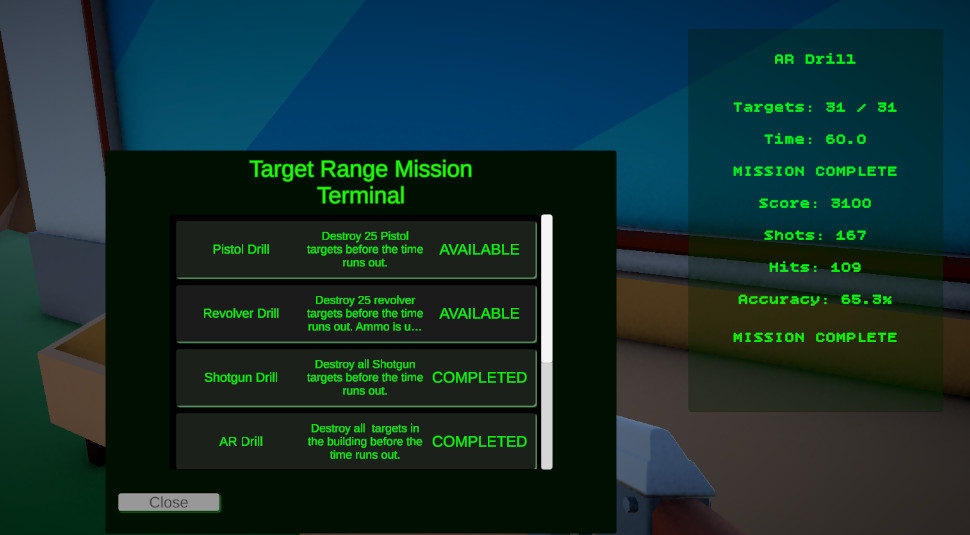
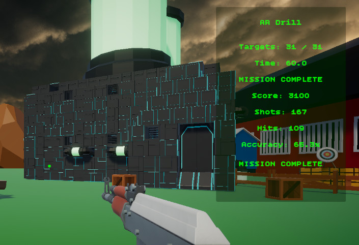

Mission Terminal Flow
Shows the player-facing entry point for selecting weapon drills and starting target range missions.
- Mission Selection
- Unlock Flow
- Terminal UI
A reusable Unity mission framework for weapon drills, timed objectives, target groups, score tracking, hit accuracy, completion state, trial progression, and return-to-hub flow.
The Target Range Mission Framework turns a simple shooting range into a reusable mission structure.
This system controls weapon-specific drills inside Echo Systems Lab. Each drill can define its own weapon reward, target group, time limit, target objective, active target count, respawn behavior, completion requirements, and trial progression rules.
The framework separates mission data from mission runtime behavior. The drill rules live in ScriptableObjects, while the mission controller manages active state, timer updates, objective progress, target destruction events, scoring, hits, shots, accuracy, and completion.
The result is a system where a pistol drill, shotgun drill, AR drill, sniper drill, revolver drill, or crossbow drill can all use the same mission pipeline while feeling distinct through their data.
Run target range drills using reusable mission data, runtime state, target groups, weapon restrictions, and HUD feedback.
Select drill → Pick up mission weapon → Destroy targets → Track score and accuracy → Complete drill.
Demonstrates state management, data-driven design, event-based UI updates, objective logic, and gameplay progression.
The system is built around a clear player-facing loop with a hidden runtime framework underneath.
The player opens the Target Range Mission Terminal and selects an available drill. Locked missions remain gated by completed mission IDs.
The selected drill arms the correct weapon pedestal and activates the correct target group. The player is prompted to pick up the mission weapon.
Once the player equips the required weapon, the mission starts. The timer, targets destroyed, shots, hits, score, and accuracy update during play.
When the required target count is reached, the mission completes, progress is saved, weapon unlocks are preserved, and the next eligible mission can unlock.
Once all required target range missions are complete, the full Target Range Trial is marked complete and the Combat Trial unlocks.
After full trial completion, the HUD displays a return prompt and the player can press R to return to the hub.
Screenshots showing the mission loop, Unity inspector setup, target range environment, HUD feedback, target group configuration, and completion flow.

Shows the player-facing entry point for selecting weapon drills and starting target range missions.

Shows the ScriptableObject setup used to configure each drill without rewriting mission code.

Shows the selected mission weapon being presented to the player before the drill begins.

Shows mission state, target progress, time remaining, score, shots, hits, and accuracy during play.

Shows how target slots are grouped so each mission can activate the correct range area.
Shows the final completion state where the player can return to the hub and the next trial unlocks.
Each piece has a focused job so the system stays expandable instead of becoming one giant wire monster.
Defines the drill rules: weapon reward, target group ID, timer, required destroyed targets, active target count, respawn delay, trial completion contribution, and mission execution mode.
Owns runtime state. It arms missions, starts missions, updates timers, handles mission completion, registers shots and hits, tracks destroyed targets, and fires state-change events.
Manages target slots for a drill. It activates target groups, chooses active targets, handles respawn logic, and supports destroy-all objective behavior.
Bridges individual target objects to the owning target group. It activates, hides, resets, preserves destroyed state, and notifies the group when destroyed.
Receives damage, tracks current health, awards weapon type XP, spawns destruction effects, and routes destroyed notifications into the mission target system.
Displays mission title, goal progress, timer, mission state, score, shots, hits, accuracy, completion text, and return-to-hub instructions.
The mission controller uses explicit states so the HUD, weapon restrictions, target behavior, and completion logic know what phase the drill is in.
The target range flow is organized around simple, readable runtime states. This makes it easier to know when the player is choosing a drill, preparing to start, actively playing, completing a mission, failing a mission, or finishing the full trial.
The HUD listens to mission state changes instead of polling every separate system manually. When the mission controller changes state, the UI updates the title, objective, timer, status text, and completion prompt.
This is especially useful because the system supports both individual drill completion and full Target Range Trial completion. A single mission can finish without leaving the scene, while the full trial can unlock the next major trial and offer the return-to-hub prompt.
No active drill is running. The player can use the mission terminal or explore the space.
A mission has been selected and the correct weapon pedestal is ready.
Timer, target objectives, shot count, hit count, score, and accuracy are actively updating.
The drill objective has been met. Progress is saved and unlocks can update.
The drill timer expired before the objective was completed.
All required range drills are complete, unlocking the next major trial.
Each drill uses the same code path but different data, which keeps the system reusable.
The mission framework does not need a separate controller for every weapon challenge. Instead, each drill is configured through a TargetRangeMissionData asset.
That data determines which target group activates, which weapon is equipped for the mission, how many targets must be destroyed, how long the player has, whether targets respawn, and whether that drill counts toward full trial completion.
This makes balancing faster. A pistol drill can emphasize precision, a shotgun drill can emphasize close-range spread, an AR drill can emphasize sustained fire, and a sniper drill can emphasize deliberate aim without rewriting the mission framework.
The system keeps the player informed without making the mission controller responsible for drawing UI.
Shows the active drill name or full trial completion message.
Displays destroyed target count against the current objective requirement.
Shows remaining time while running and full time limit while armed.
Communicates states like pick up weapon, mission active, mission complete, mission failed, or press R to return to hub.
Tracks shots fired, hits landed, and calculated accuracy percentage.
Gives clear end-state feedback for completed drills and full target range trial completion.
This framework grew through real debugging and iteration, which is where the architecture started sharpening its teeth.
Early versions of the range could complete individual drills, but the full Target Range Trial needed a cleaner way to know when every required drill had been completed. The solution was to separate individual mission completion from full trial completion.
Weapon unlocks also needed a distinction between collection ownership and mission permission. Once a player unlocked a weapon, it should remain in their collection, but that should not allow them to use the wrong weapon during another focused drill.
The target system also needed multiple behaviors. Some drills use respawning targets, while others use destroy-all setups where broken targets should remain broken instead of resetting and clipping with spawned effects.
Individual drills can complete independently, while full trial completion unlocks the next major mission.
Owned weapons remain in the player collection, but mission drills can lock active weapon selection.
Target groups can either keep the drill alive with respawns or preserve destroyed objects for one-pass objectives.
The system uses focused scripts instead of one monolithic range controller.
The mission controller owns mission runtime state and scoring. Mission data owns drill rules. Target groups own target activation and respawn behavior. Target health owns damage and destruction. The HUD owns display. Weapon controllers own firing and loadout restrictions.
This makes the framework easier to expand. Adding another target range drill is mostly a data task, while adding a new objective mode can happen inside the target group or mission data layer without rewriting the whole player weapon system.
This system demonstrates practical gameplay engineering rather than a single isolated feature.
The Target Range Mission Framework shows my ability to build gameplay systems that connect data, runtime state, UI, progression, input, weapons, and scene flow.
It also shows iteration discipline. Each feature was added as the project needed it: mission terminal flow, weapon-specific drills, full trial completion, target objective modes, return-to-hub behavior, target destruction effects, weapon XP, and drill restrictions.
This is the kind of system work I enjoy most: building the skeleton, wiring the nerves, then tuning the little sparks until the whole thing feels alive.
The target range framework connects directly to weapon data, target objectives, save progression, and HUD feedback.
Details target groups, respawn behavior, destroy-all objectives, hidden destroyed visuals, and preserved broken target states.
Covers owned weapon collections, mission weapon locking, temporary weapon equips, ammo data, reload behavior, and weapon cycling.
Covers completed mission IDs, weapon unlocks, active weapon data, weapon type XP, and save persistence.